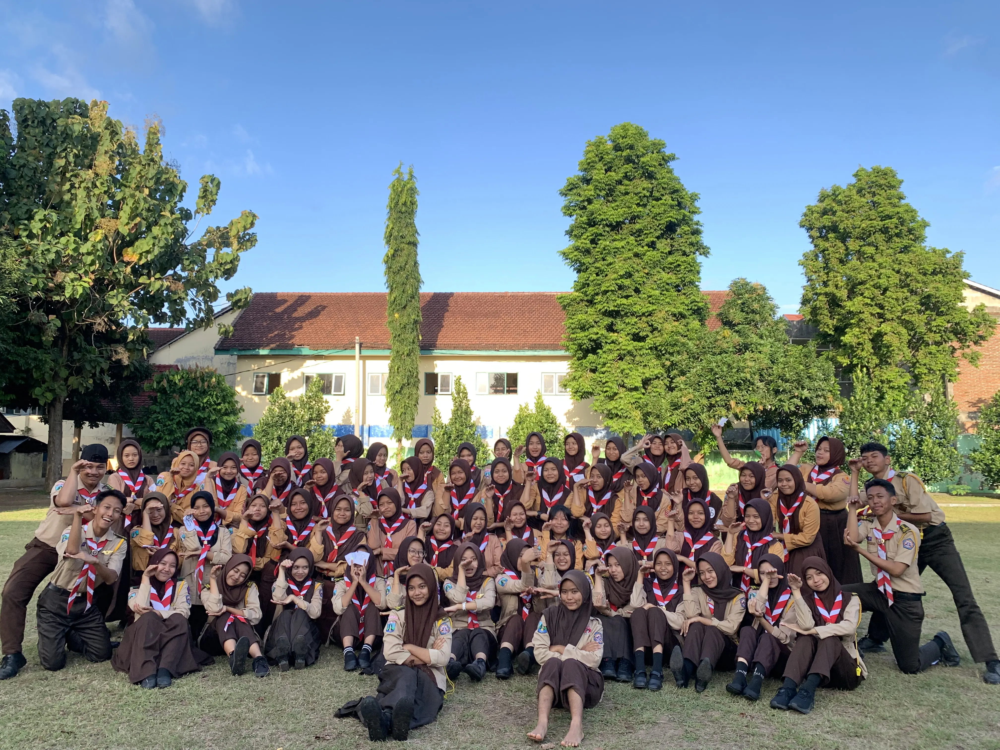

Kegiatan Organisasi Dewan Ambalan Di SMK Negeri 1 Banyuwangi
PTA (Penerimaan Tamu Ambalan)
PTA (Penerimaan Tamu Ambalan), Penerimaan Tamu Ambalan (PTA) di SMK Negeri 1 Banyuwangi adalah kegiatan pramuka untuk menyambut siswa baru dan mengenalkan mereka pada kepramukaan penegak. Kegiatan ini melatih kedisiplinan, kebersamaan, dan kepemimpinan melalui aktivitas seru dan edukatif.

Jumat Rutin
Jumat Rutin, di SMK Negeri 1 Banyuwangi adalah kegiatan Pramuka yang dilaksanakan setiap hari Jumat. Kegiatan ini bertujuan membina kedisiplinan, kerja sama, dan keterampilan kepramukaan bagi seluruh peserta didik. Melalui berbagai aktivitas seperti baris-berbaris, materi kepramukaan, permainan edukatif, dan latihan lapangan, siswa dilatih untuk menjadi pribadi yang bertanggung jawab, tangguh, dan berjiwa kepemimpinan.